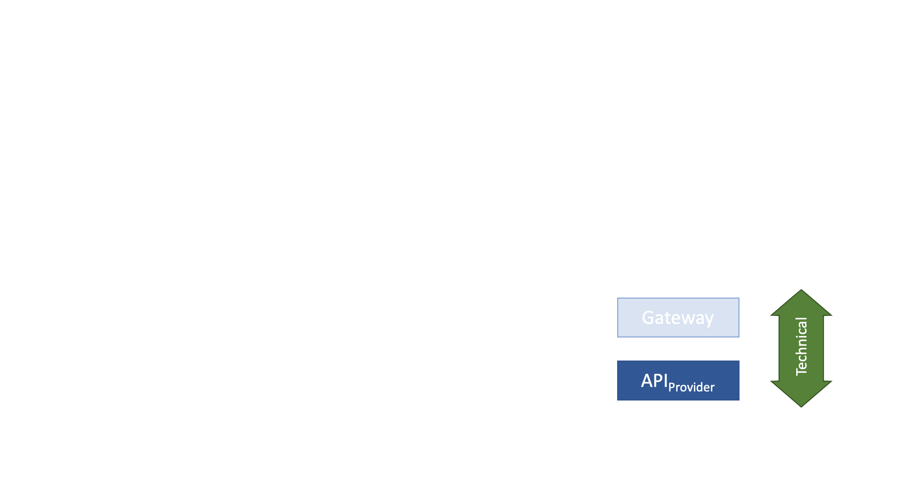
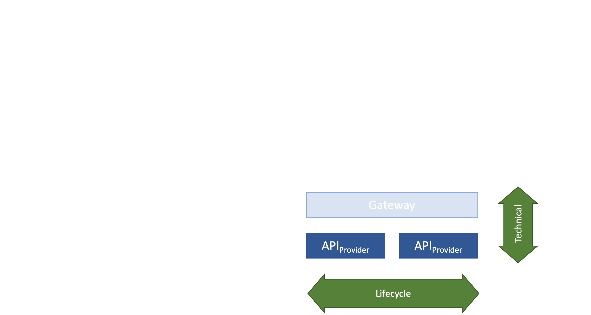
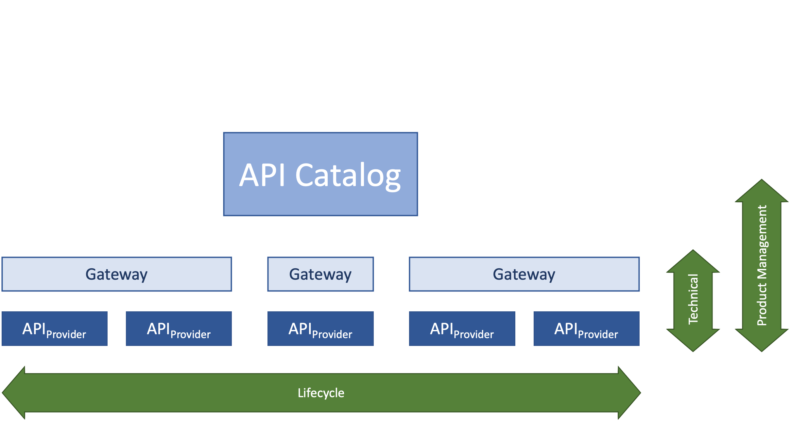
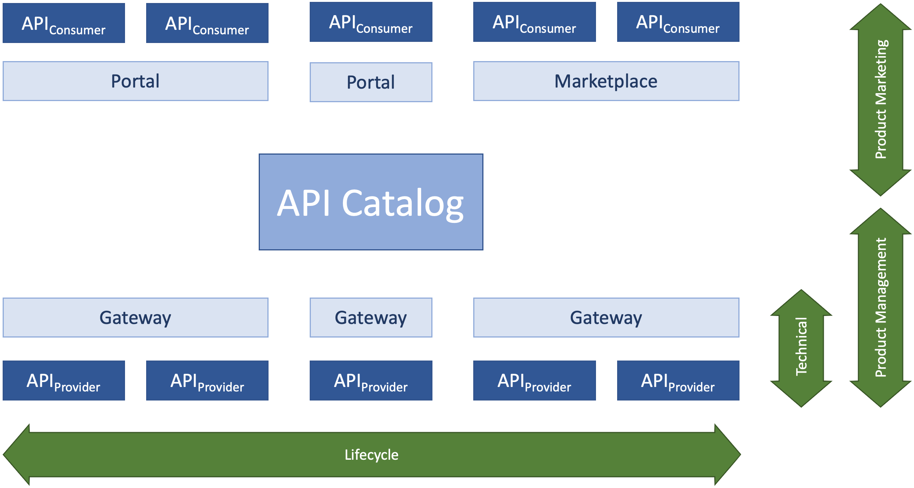

How do APIs work?
(16) API Scope
- Different APIs for different API users: What's your API scope?
- Private APIs are intended to be used inside the scope
- Partner APIs are intended to be used by established partners
- Public APIs are intended to be used by
anybody
- API scope and categorization can change
(17) API Styles
- RPC Style: XML-RPC, SOAP, gRPC, Avro
- Resource Style: OpenAPI/Swagger, RAML, API Blueprint
- Hypermedia Style: HAL, Siren, Atom, HATEOAS
- Query Style: GraphQL, OData, SPARQL
- Event-based Style: MQ, WebSub, MQTT, XMPP, AMQP, Kafka, AsyncAPI
(18) API Style: Synchronous

(19) API Style: Asynchronous (Events)

(20) APIs and the Web
- Local APIs have been used since the 1940s
Network APIs
have been used since the 1950s
Network APIs
used to be called Protocols- Roy Fielding started calling protocols network-based APIs
- REST refers to APIs that work based on Web principles and technologies
(21) API Catalogs: Starting Point

(22) API Catalogs: Management as a Service

(23) API Catalogs: Building a Catalog

(24) API Catalogs: Building a Marketplace
